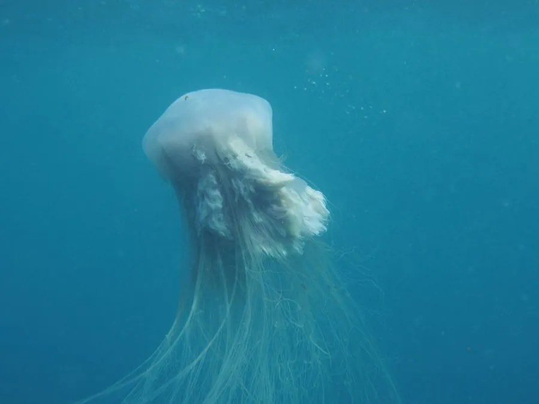

其他无脊椎动物 · 动物界
白色霞水母 Cyanea nozakii

中国近海常见的大型霞水母，伞径可达 60 厘米以上，触手密集且刺伤强烈，夏秋季大量出现时常影响渔业。
- 分类
- 门刺胞动物门纲钵水母纲目旗口水母目科霞水母科属霞水母属
- 栖息环境
- 中国黄海、东海和渤海的近岸浅海水域
- 地理分布
- 中国近海、日本和朝鲜半岛沿海
- 保护级别
- IUCN 暂无评估
物种志
白色霞水母的伞体呈扁平碟形，直径 30–60 厘米，最大可超过 1 米，伞面乳白色、半透明，中央带淡褐色或淡黄色；伞缘伸出大量细长触手，口腕发达，呈褶皱状。触手密集且含有强效刺细胞，是它捕食和防御的武器。
它分布于中国黄海、东海和渤海，也见于日本和朝鲜半岛近海，夏秋季水温升高时大量繁殖，常形成密集的“水母潮”。它以浮游动物、鱼卵和幼鱼为食，大量出现时会捕食鱼苗、堵塞渔网，对渔业造成损失。白色霞水母的刺伤强烈，接触后会出现剧烈疼痛、红肿甚至水疱，被刺后应尽快用海水冲洗并用热水浸泡，不要用淡水或酒精，严重时及时就医。它的生活史包括附着的水螅体阶段和浮游的水母体阶段。
形态与习性
- 伞径约 30–60 cm，最大可超过 1 m
- 触手数量多而细长，刺细胞强烈
- 食性浮游动物、鱼卵和幼鱼
- 刺伤风险刺伤剧痛红肿，海水冲洗、热水浸泡，严重时就医
- 暴发夏秋季大量繁殖，可堵塞渔网、捕食鱼苗
- 生活史水螅体附着，水母体浮游
趣味知识
- 白色霞水母夏秋季会形成密集“水母潮”，对渔业造成损失。
- 它的触手又密又长，刺伤比普通水母更强烈。
- 被霞水母刺伤后不要用淡水冲洗，以免刺激刺细胞释放毒液。